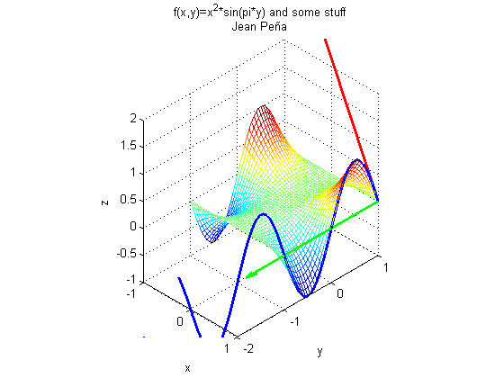

function main(x0,y0)
if (nargin<2) y0=1; end
if (nargin<1) x0=1; end
clc
clf
syms x;
syms y;
f=@(x,y)(x.^2).*sin(pi.*y);
[dx, dy, z] = gradient2(f, x, y, x0, y0);
syms t;
[xt,yt,zt]=paramIt(dx,dy,f,x,y,t,x0,y0);
[dxt, dyt, dzt] = tangInt(xt,yt,zt,t,0);
curveOnSurf=ezplot3(xt,yt,zt);
set(curveOnSurf, 'Color', 'blue', 'LineWidth', 2);
hold on
graphIt(f, -1, 1, -1, 1, 0.05);
gradientVector=quiver(x0,y0,dx, dy);
set(gradientVector, 'Color', 'green', 'LineWidth', 2);
tangentVector=quiver3(x0,y0,z,dxt,dyt,dzt);
set(tangentVector, 'Color', 'red', 'LineWidth', 2);
axis equal;
axis([-1 1 -2 1 -1 2]);
title(sprintf('f(x,y)=x^2*sin(pi*y) and some stuff\nJean Peña'));
xlabel('x');
ylabel('y');
zlabel('z');
view([2 -2 2]);
end
function [dx, dy] = gradient(f, x, y)
dx=diff(f(x,y),x);
dy=diff(f(x,y),y);
dx=@(x,y)subs(dx);
dy=@(x,y)subs(dy);
end
function [dx, dy, z] = gradientXY(f, dx, dy, x0, y0)
dx=dx(x0,y0);
dy=dy(x0,y0);
z=f(x0,y0);
end
function [dx, dy, z] = gradient2(f, x, y, x0, y0)
[dx, dy] = gradient(f,x,y);
[dx,dy,z]= gradientXY(f, dx, dy, x0, y0);
end
function graphIt(f, Xmin, Xmax, Ymin, Ymax, interval)
X=Xmin:interval:Xmax;
Y=Ymin:interval:Ymax;
[X,Y] = meshgrid(X,Y);
fn = f(X,Y);
mesh(X,Y,fn);
end
function [xt,yt,zt] = paramIt(dx,dy,f,x,y,t,x0,y0)
xt=(x0+dx.*t);
yt=(y0+dy.*t);
zt=subs(f,x,xt);
zt=subs(zt,y,yt);
end
function [dxt,dyt,dzt] = tangInt(xt, yt, zt, t, t0)
dxt=diff(xt);
dyt=diff(yt);
dzt=diff(zt);
dxt=@(t)subs(dxt);
dyt=@(t)subs(dyt);
dzt=@(t)subs(dzt);
dxt=dxt(t0);
dyt=dyt(t0);
dzt=dzt(t0);
end
